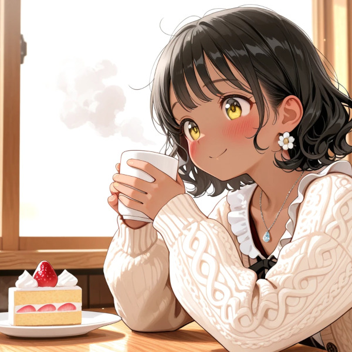

カウンター席、コーヒーの湯気 ケーキのフォークが、少し重い Just me, my coffee, and a little cake A quiet afternoon, nothing at stake 隣の席に、誰かが座る それだけのことなのに デイドリーム、いただきます。 "よく来るんですか？"なんて聞かれて What if this stranger becomes something more What if today is the day I've waited for デートに誘われ、少し喧嘩もして それでも一緒に、笑い合う未来 I can see it all, so clear, so real This little daydream, this stolen thrill 喧嘩した夜も、仲直りのキス 気づけば二人、指輪を交わす We'd argue sometimes, but we'd always stay Growing old together, day by day って、妄想がすぎるでしょ まだケーキも、半分残ってるのに Okay, that escalated way too fast Let's rewind, back to the coffee and the cake カチャリと響く、フォークの音 お皿の上、イチゴがひとつ No drama here, no wedding ring ただの静かな、カフェの昼下がり 一人の時間も、悪くない This quiet moment is enough for me デイドリーム、ごちそうさま。 No stranger, no romance, just me and my plate Just an ordinary afternoon, and that's okay それでいい、それがいい This little escape was enough for today Now back to reality, with a smile on my face. また今度、同じ席で Maybe next time, who knows